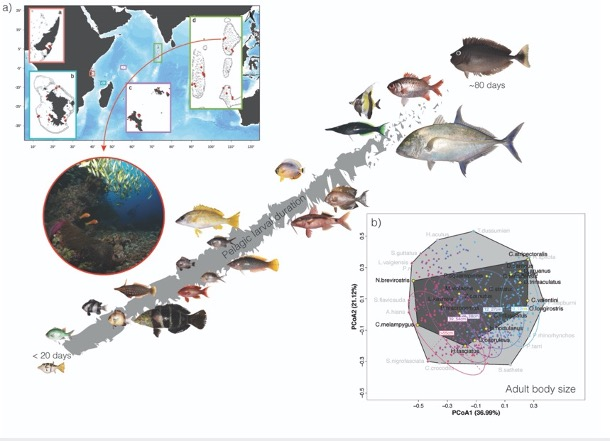

Larval dispersal, marine connectivity and the micro–macroevolution continuum in tropical reef fishes
This recent research axis aims at bridging microevolutionary (population genetics, dispersal) and macroevolutionary (speciation, diversification, morphological evolution) processes to better understand how tropical reef fish biodiversity is generated and maintained. A key question is the role of marine connectivity: how the dispersal abilities of species, particularly during their pelagic early life stages, shape gene flow among populations and, ultimately, species distributions and assemblage turnover across seascapes.
A central part of this axis is the study of larval dispersal. Most reef fishes have a pelagic larval phase, yet larvae are far from passive particles: they can swim, orient and actively choose where to settle. Using tracking technologies in situ, we estimate the active dispersal abilities of larvae, and we compile global databases of pelagic dispersal traits for early life stages of marine fishes, to better represent dispersal in connectivity and biodiversity models.
My work combines (i) in situ estimates and global databases of larval dispersal traits, (ii) the analysis of species–genetic diversity correlations across spatial scales and lineages, and (iii) comparisons of trait and morphological diversity from populations to clades, to test whether the same processes shape biodiversity across evolutionary scales.
Selected publications
- Ruiz, E., Thémèze-Leroy, M., Ferraton, F., Panfili, J., Durand, J-D., Kulbicki, M., Silhol, J., Bernard, A., Thomas, R. Morisson, T., Djouldem, Y., Baptiste, E., Pascal, P-Y., Vanalderweireldt, L., Cordonnier, S., Chatagnon, A. Rault, P-L., Chareyre, P., Leon, L., Leone, I., Fouchan, Y., Manel, S., Boulanger, L., Victor, B., Albouy-Boyer, S., Thomas Le Berre, T., Dromard, C.R, Pellissier, L., Albouy, C., Leprieur, F. (2026) Global pelagic dispersal traits databases for early-life stages of marine fishes. Scientific Data, 13: 1291.
- Ruiz, E., Pascal, P.-Y, Cordonnier, S., Vanalderweireldt, L., Chatagnon, A., Rault, P.-L., Albouy, S., Silhol, J., Thomas, R., Dromard, C., Pellissier, L., Le Berre, T., Panfili, J. Albouy, C.,Leprieur, F. (2025) In situ estimation of active dispersal abilities in reef fish early life stages using tracking technologies. Methods in Ecology and Evolution, 16, 744-759.
- Donati, G., Albouy, C., Claverie, T., Mouillot, D., Govinden, R., Hagen, O., Ibrahim, S., Pagu, J., Zareer, I., Ziyad, A., Leprieur, F.* & Pellissier, L.* (2025) Continuity in morphological disparity in tropical reef fishes across evolutionary scales. Communications Biology, 8, 205. (*co-senior authorship)
- Vilcot, M., Faure, N., Andrews, K., Bowen, B., Leprieur, F.,*Manel, S.* (2024) Neutral processes and taxonomic scale drive beta species-genetic diversity correlations in a submesophotic tropical reef fish Molecular Ecology 33, e17423 (* co-senior authorship)
- Vilcot, M., Albouy, C., Donati, G., Claverie, T., Julius, P., Manel, S., Pellissier, L. & Leprieur, F. (2023) Spatial genetic differentiation correlates with species assemblage turnover across tropical reef fish lineages. Global Ecology and Biogeography, 32 : 535-547.
- Donati, G., Zemp, N., Manel, S., Hagen, O., Leblond, J., Ibrahim, S., Zareer, I., Zyad, A., Govinden, R., Pagu, J., Claverie, T., Murua, H., Randriamahaleo, S.I., Leprieur, F.*, Albouy, C.*, Pellissier, L.* (2021) Species ecology explains the various spatial components of genetic diversity in tropical reef fishes. Proceedings of the Royal Society B288: 1959 (*co-last authors)